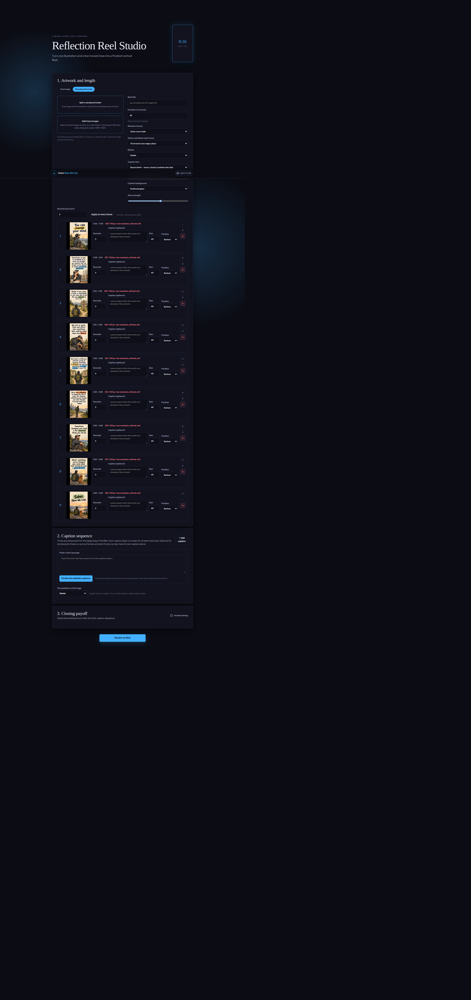
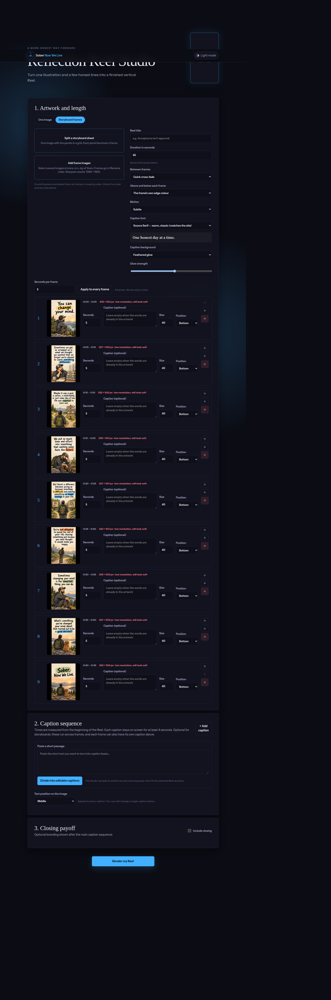

Quinnix Software — Project
ReelGenerator
A project focused on generating short-form video content and automating media production workflows. Currently in early development, with exploration of AI-assisted content generation, scripting, and automated rendering pipelines.
About the Project
Automated Video Content Generation
ReelGenerator explores the question of how much of a short-form video production workflow can be automated. Short-form video content requires consistent output: scripting, visuals, timing, captions, and format-specific rendering — tasks that are individually manageable but collectively time-intensive to do manually.
The project is in early stages, with the primary focus on understanding where automation is practical and where human judgment remains necessary. This means building and testing individual pipeline components before assembling them into a complete workflow.
ReelGenerator is not a commercial product at this stage. It is a development project, and the capabilities described below reflect work in progress rather than finished functionality.




Cropped from the existing editor — not a rendered video preview
Development Focus
Areas of Work
Generating structured scripts for short-form content, including segment timing and visual cue notes.
Research into assembling video frames, audio, and captions into a rendered output file without manual editing steps.
Exploration of AI tools for drafting scripts, selecting visuals, and generating voiceover audio. Currently experimental.
Generating outputs sized and formatted for different short-form platforms. Under active research.
Automatically generating and timing caption tracks from script content. Early stage.
Identifying which parts of the content production process are good automation candidates and which require human input.
Development Status
Early Stage
ReelGenerator is in early development. The project is in the phase of building and testing individual pipeline components. No complete end-to-end workflow is functional yet, and no public release is planned.
Capabilities described on this page reflect active development work, not shipped features. Items marked as experimental are research-stage.
Development Phase
Technologies
Areas of Interest
Technology choices are still being evaluated as the project develops.